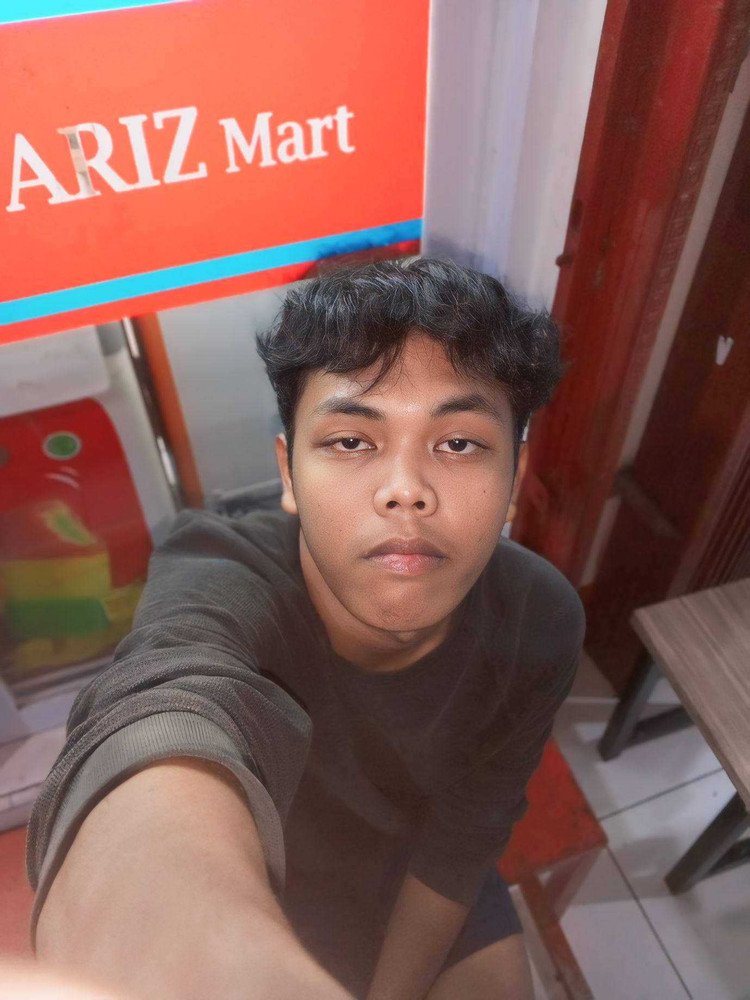

| Nama |
Setya W. Putra. |
 |
| TTL |
Purbalingga, 27, Maret, 2007. |
| Alamat |
RT04, RW12, Ds. Pengadegan, Kec. Pengadegan, Kab. Purbalingga, Prov. JATENG, Indonesia, Asia Tenggara, Asia, Bumi, Galaksi Bima Sakti. |
| Agama |
Islam |
| Pendidikan |
XII-D, SMAN1 Rembang, Purbalingga |
| Zodiak/Shio |
Aries/Babi. |
| Pekerjaan |
Frontend Engineer, (Pelajar, Joki Motor, Photo/Videographer)sampingan. |
| Status |
Menyukai Orang Yang Masih Terpenjara Masa Lalunya. |
| Keluarga |
Anak ketujuh dari tujuh bersaudara, -1 ygy, punya kaka cewe 1 udah meninggal, bahagia ada berantemnya dikit. |
| Hobi |
Jadi badut wanita terluka. |
| Cita-cita |
Jadi PACARNYA Ifta. |
| Ukuran Baju |
XL. |
| Ukuran Celana |
30, kayaknya. |
| Ukuran Sepatu |
Daily 42, kalo main bola 41. |
| Makanan Fav |
Mooncake, tapi harus merk padimas titik. |
| Minuman Fav |
Vietnam Drip/Ice Americano. |
| Yang Dibutuhkan |
Support System, seseorang yang mempunyai tujuan baik kedepannya. (seseorangnya WAJIB Ifta). |
| Love Language |
Kalo emang cinta mah apa aja bisa, yang biasanya dipake mungkin Physical touch ama kadang kalo lagi kesel suka jadi khotib eheheh tapi sayang kok sama ifta tapi. |
| Riwayat Asmara |
Percaya ga percaya pacaran baru 3 kali, TTM ato HTS 4 kali. Terakhir pacaran 2023 bulan 1, terakhir HTS/TTM 2024 bulan 4. |
| Yang Bikin Lost Interest/Ilfeel |
Orang yang tidak bisa menghargai hak kecil, ama dry text si cuman kalo ifta NGGAAPAAPA |
| Telepon |
+6285866220196 |
| Email |
setyawp098@gmail.com |
| Instagram |
@lstprsnltyyyyy |